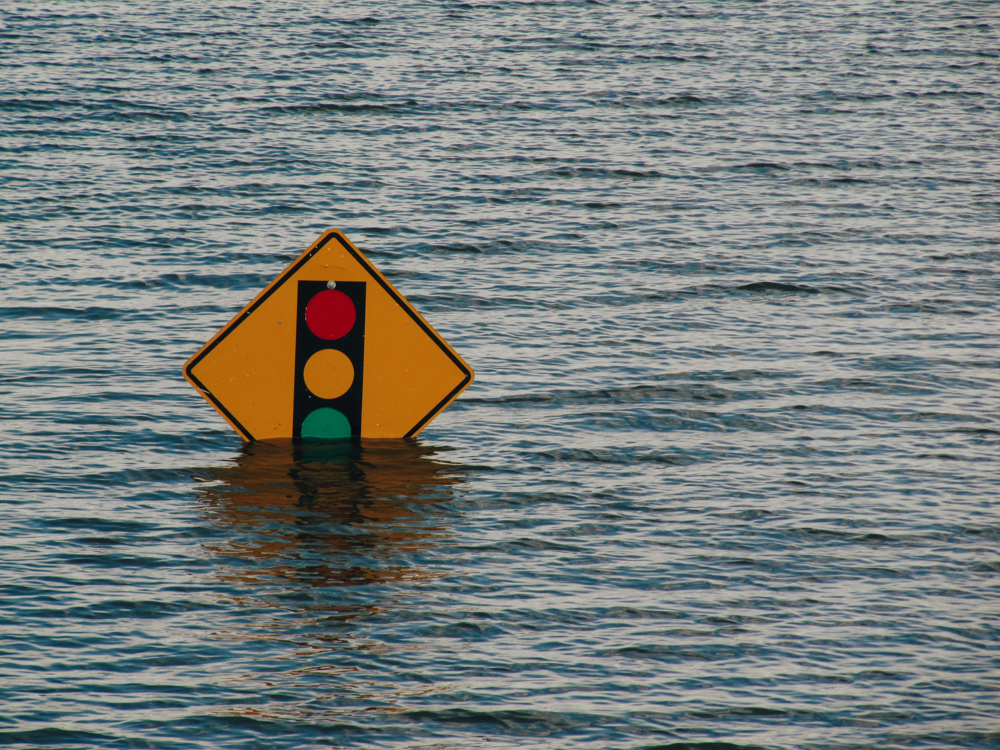
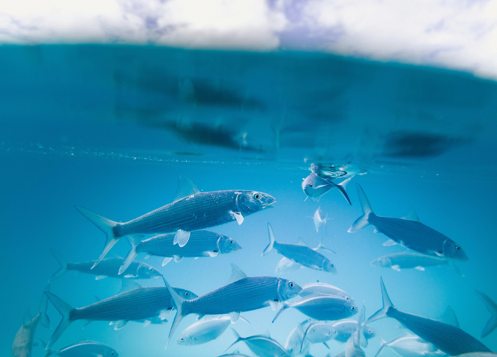
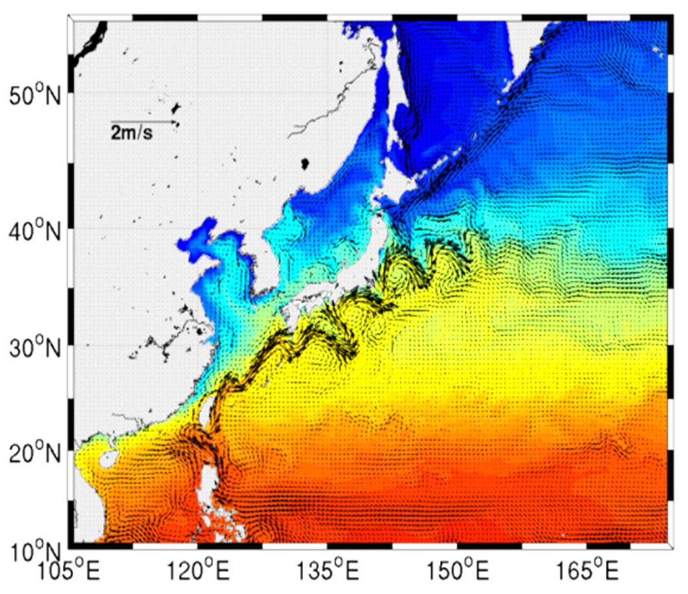

Home

Oceanopia 해양상층역학연구실
Our lab studies the physical characteristics of the surrounding seas of Korea and the global ocean, utilizing in-situ observations and numerical models to reveal the dynamics associated with ocean circulation and climate change, and conducts research to develop and improve prediction skills for future changes in the marine environment and climate.
Professor
Chan Joo Jang
Office: KIOST, 385 Haeyang-ro, Yeongdo-gu, Busan, South Korea
Phone: 051-664-3117
Email: cjjang@kiost.ac.kr
Education
- 2001: Ph.D. in Atmospheric Science, Yonsei University, Seoul, Korea
- 1995: M.S. in Oceanography, Seoul National University, Seoul, Korea
- 1990: B.S. in Oceanography, Seoul National University, Seoul, Korea
Experience
- Mar. 2011 - Present: Principal Research Scientist, Ocean Circulation Research Center, KIOST
- Sep. 2010 - Present: Physical Oceanography and Climate Scientific Committee (POC) Member, PICES
- Oct. 2011 - Present: Co-Chair, Working Group 29 on Regional Climate Modeling, PICES
- Apr. 2001 - Feb. 2011: Senior Research Scientist, Ocean Circulation & Climate Research Division, KORDI
- Nov. 2006 - Oct. 2008: Assistant Research Scientist, Dept. of Oceanography, Texas A&M University, USA
Research Areas

Ocean Climate Change
Perform multifaceted analyses on the impacts of global warming and climate variability on ocean circulation and physical properties, while precisely tracking long-term dynamics and fluctuations in marine environments.

Climate Driven Fisheries
Interpret thermal and ecological migration patterns of fishery resources under climate change using data-driven modeling to research sustainable fishery management strategies.

Ocean Modeling
We conduct ocean modeling research using the Regional Ocean Modeling System (ROMS). By dynamically downscaling outputs from global climate models, we simulate the Korea waters at high resolution and analyze variations in key oceanographic variables.
Publications
Journal Articles
| Year | Title & Authors |
|---|
Dissertations
- Jang, Chan Joo (2002): Effects of the parameterization of vertical mixing in the ocean general circulation model, Ph.D. thesis, Yonsei University.
- Jang, Chan Joo (1995): Short term variability of hydrography by advection in the Korea Strait, M.S. thesis, Seoul National University (in Korean).
Conference Papers
| Year | Title & Authors |
|---|
Members
Gallery

테크노파크 코스모스
2016-10-11

시화호 현장 조사
2014-10-31


눈 온 날 연구실 기록
2012-02-03

연구진 회식
2011-05-16
Contact Us
Location: KIOST, 385 Haeyang-ro, Yeongdo-gu, Busan, South Korea
Email: cjjang@kiost.ac.kr
Phone: 051-664-3117
Office Hours: Mon - Fri, 09:00 - 18:00
Google Maps에서 위치 열기 →